Vue active · captures de cellules
Huit thèmes, quatre tailles, ASCII/NO_COLOR. Données de démonstration, sans inférence.
native/abyss-120-work.png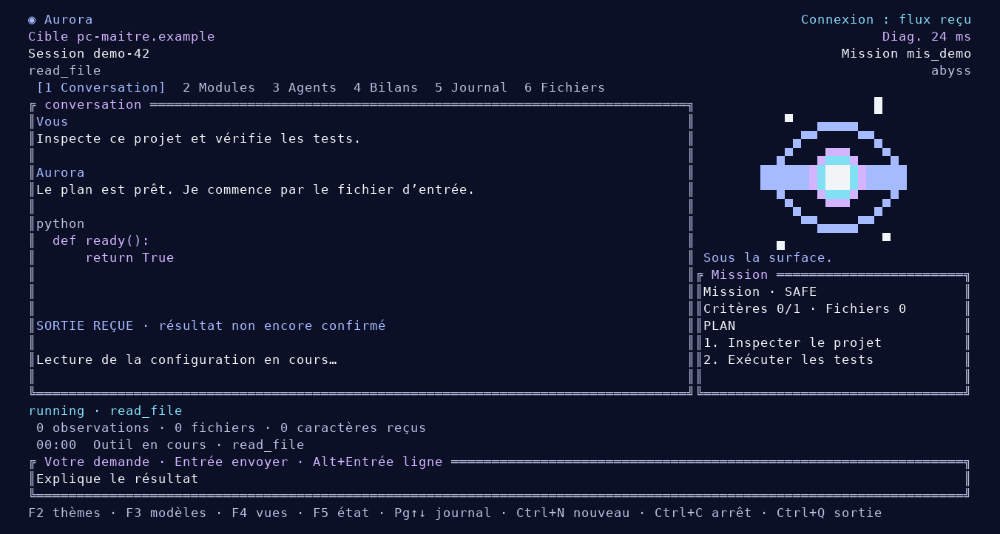
native/brutal-120-work.png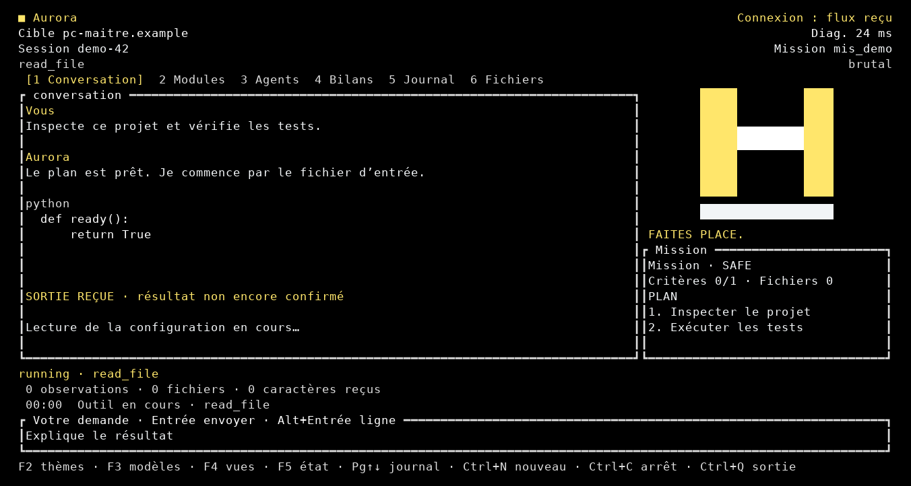
native/glacier-120-work.png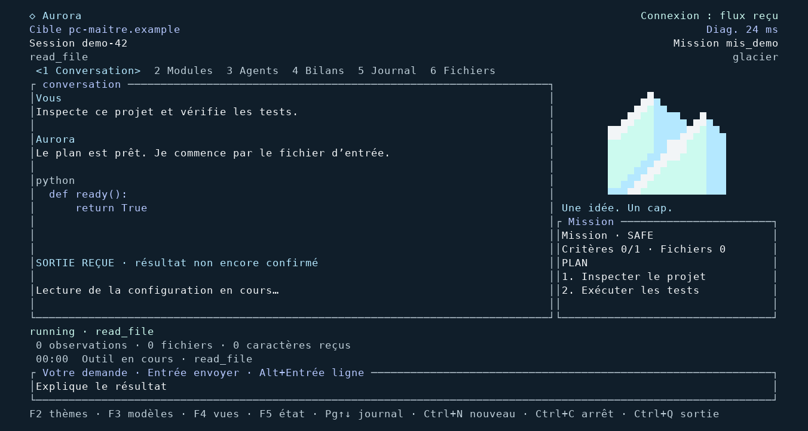
native/jobia-120-work.png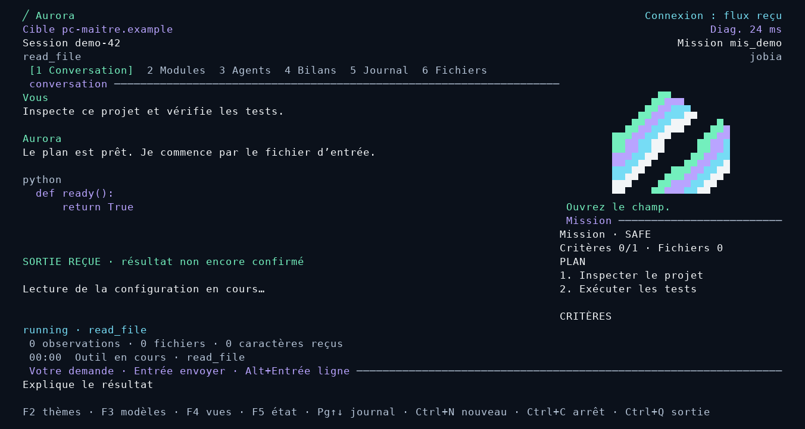
native/otter-120-work.png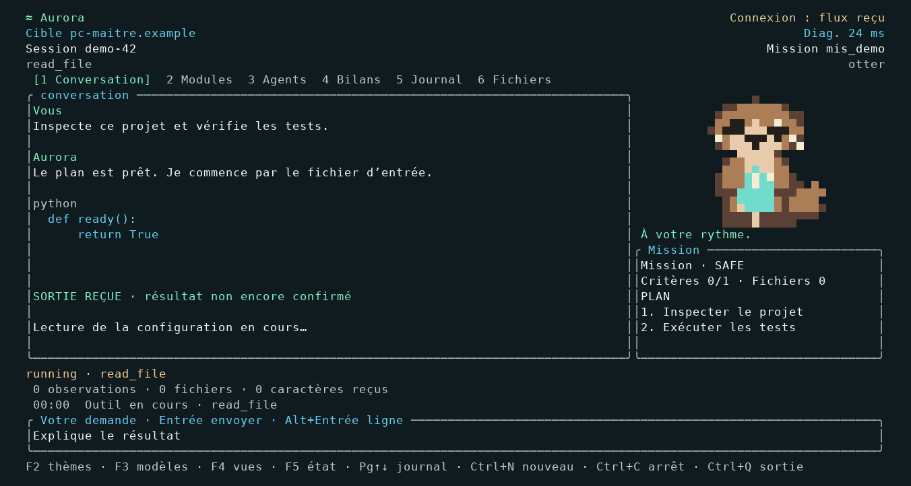
native/otter-200-work.png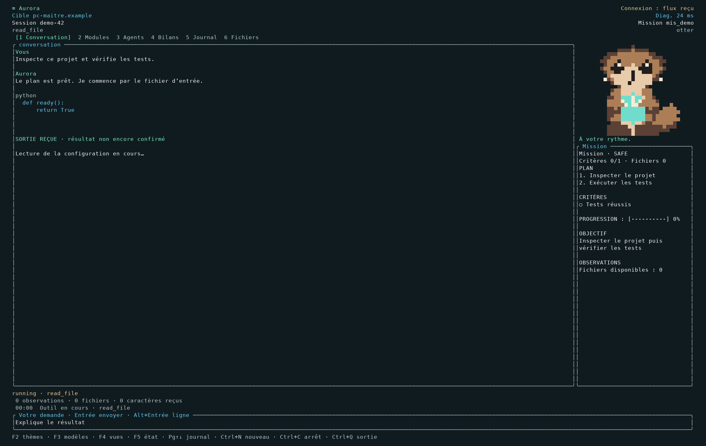
native/otter-60-work-ascii-no-color.png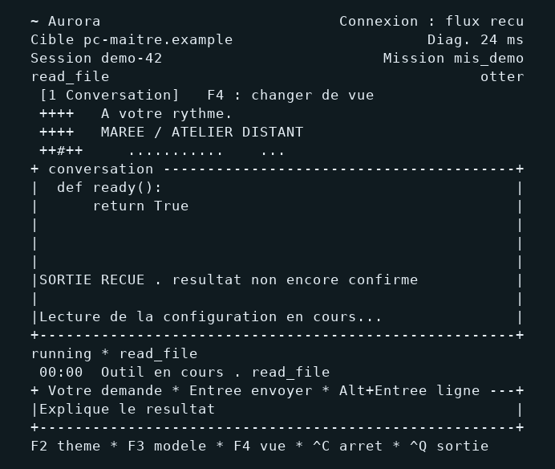
native/otter-60-work.png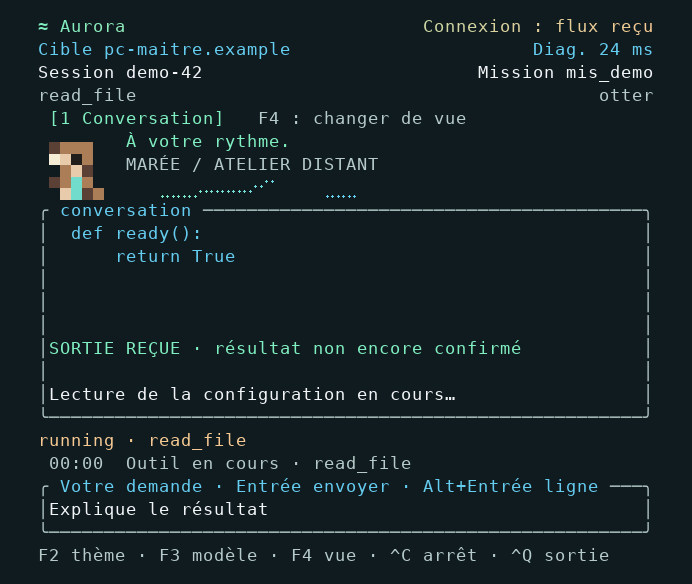
native/otter-80-work.png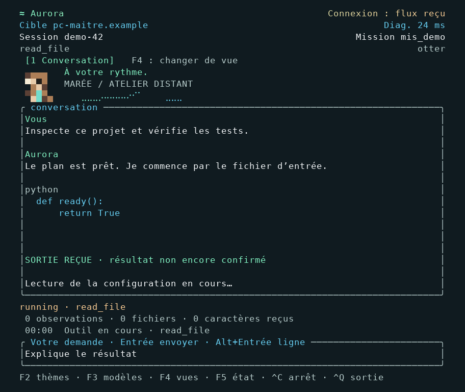
native/phosphor-120-work.png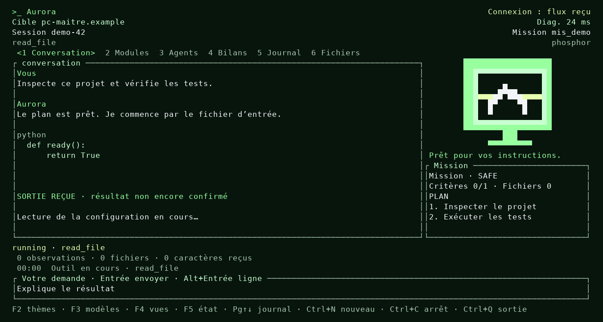
native/plain-120-work.png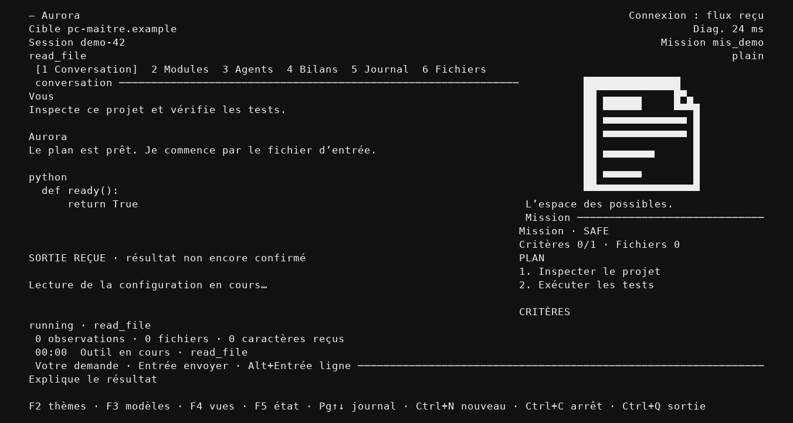
native/synthwave-120-work.png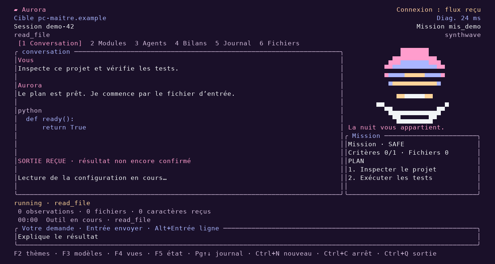
otter-120-work.png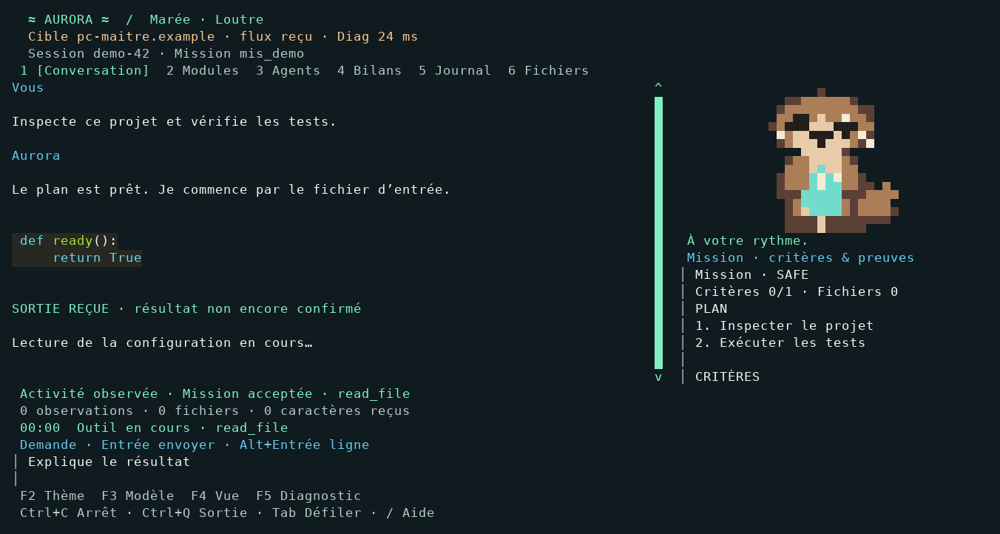